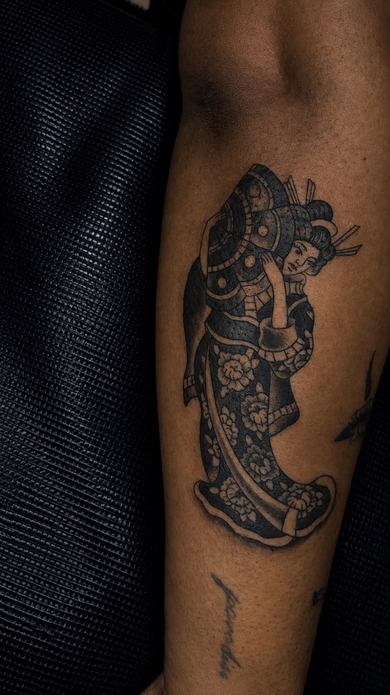
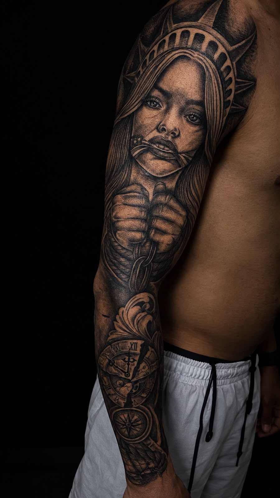
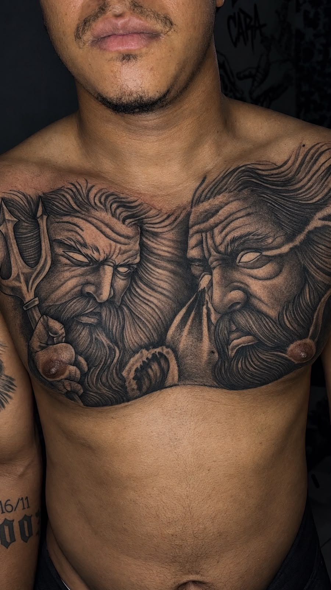
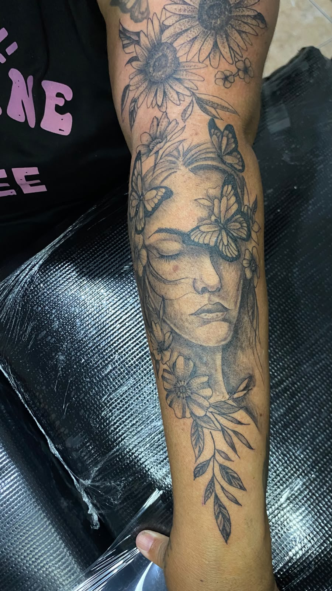
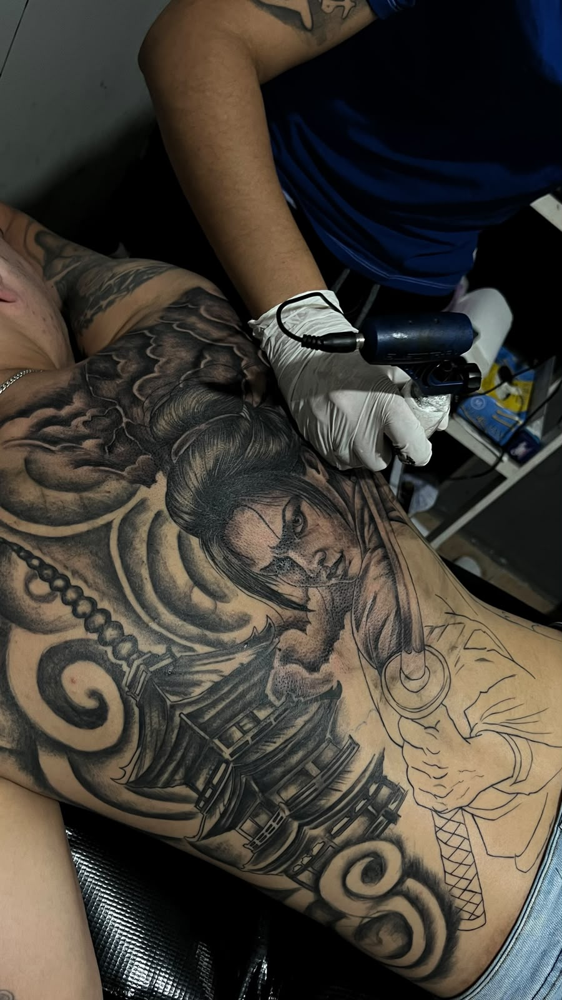
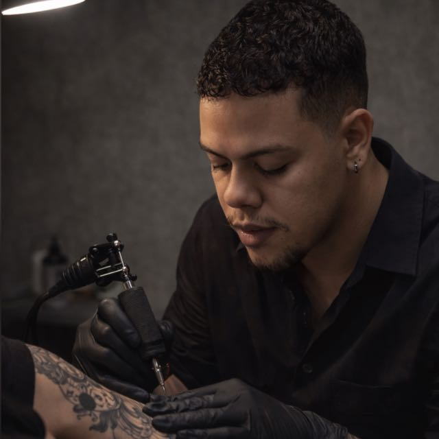

SUA IDEIA
Envie sua referência, explique o que deseja e informe local e tamanho aproximado.
SPARTA TATTOO INK
Tatuagens autorais, com significado e personalidade.
Realismo, black & grey e composições únicas.
PORTFÓLIO
Cada tatuagem é uma ideia, um sentimento e uma marca eterna na pele.





Realismo, black & grey e composições autorais.
Do conceito ao pós-tattoo, com acompanhamento.
Ambiente limpo, seguro e profissional.
Juazeiro — BA

SOBRE APOLLO
Para Apollo, tatuagem vai além de uma imagem na pele. É uma forma de transformar sentimentos, histórias e momentos importantes em algo que possa ser carregado para sempre.
Realismo Preto & Cinza · Cartoon Preto & Cinza
Conheça a história →A HISTÓRIA POR TRÁS DA SPARTA
Há 6 anos, Apollo decidiu transformar uma paixão repentina em profissão. Em apenas três dias, vendeu tudo o que tinha para investir nos primeiros materiais e começar a estudar tatuagem.
Sua jornada começou com Luan, o tatuador responsável por sua primeira tatuagem, que abriu as portas de sua casa e de seu estúdio e compartilhou os conhecimentos que deram início à sua trajetória.
O nome Sparta nasceu inspirado nos guerreiros espartanos: coragem, determinação e a disposição de seguir em frente mesmo diante do desconhecido.
“Busco transmitir identidade, personalidade e significado.”
Mais do que executar um desenho, Apollo procura entender o que cada cliente deseja, desenvolvendo a ideia junto com ele e buscando uma relação justa entre preço, qualidade e resultado.
AGENDAMENTO
Envie sua referência, explique o que deseja e informe local e tamanho aproximado.
O Apollo analisa a proposta e conversa com você sobre o projeto.
Você recebe as informações sobre valores e disponibilidade.
Com tudo definido, seu horário é reservado.
INFORMAÇÕES
Durma bem, hidrate-se e faça uma refeição antes da sessão. Evite álcool nas horas que antecedem o procedimento.
Evite sol intenso, pele irritada e produtos que possam sensibilizar a região a ser tatuada.
As condições de atendimento e documentação são informadas no momento do agendamento.
O orçamento depende do projeto, tamanho, local e complexidade. As condições são informadas após avaliação.
Consulte as regras de sinal, tolerância e remarcação antes de confirmar sua sessão.